Se levanta este manifiesto porque ya no alcanza con sobrevivir. Todxs lxs trans-disidencias viven bajo un abandono que no es casual: es sistemático, estructural y sostenido por la indiferencia de un país que se niega a mirar de frente su propia violencia. Se denuncia con firmeza que la falta de atención no es un error, sino una forma de expulsión.
Se exige el fin inmediato del maltrato institucional, del desprecio social y del silencio cómplice. Se rechaza cualquier intento de reducir la existencia trans-disidente a un debate, a una opinión o a un capricho moral. Las vidas no se negocian. La dignidad no se posterga. La identidad no necesita permiso.
Se reclama acceso urgente a salud integral, libre de prejuicios y de prácticas discriminatorias. Se demanda educación que no expulse, que no corrija la identidad, que no condene desde la infancia. Se exige empleo real, estable y digno, sin cerrarle la puerta a nadie por cómo vive, cómo se nombra o cómo se expresa. Se denuncia el abandono de la justicia, que sigue acumulando crímenes sin investigar, agresores sin castigo y violencias sin respuesta.
Se afirma que las personas Trans no solo existen, sino que sostienen, crean, transforman y resisten. Su presencia es innegociable. No se aceptará más invisibilización. No se permitirá que se siga marginando a quienes sostienen la vida desde la autenticidad y el coraje.
Este manifiesto llama a la acción inmediata. No a promesas vacías, no a discursos que no cambian nada, no a instituciones que cierran los ojos. Se exige compromiso, reparación, políticas concretas y protección efectiva.
Se advierte con claridad: la comunidad trans no retrocederá. No se silenciará. No aceptará migajas ni espacios tolerados. Exige derechos plenos porque le pertenecen. Exige respeto porque lo merece. Exige vida digna porque es lo mínimo.
16 de noviembre de 2025 — Santiago, Chile
Danny Catalán
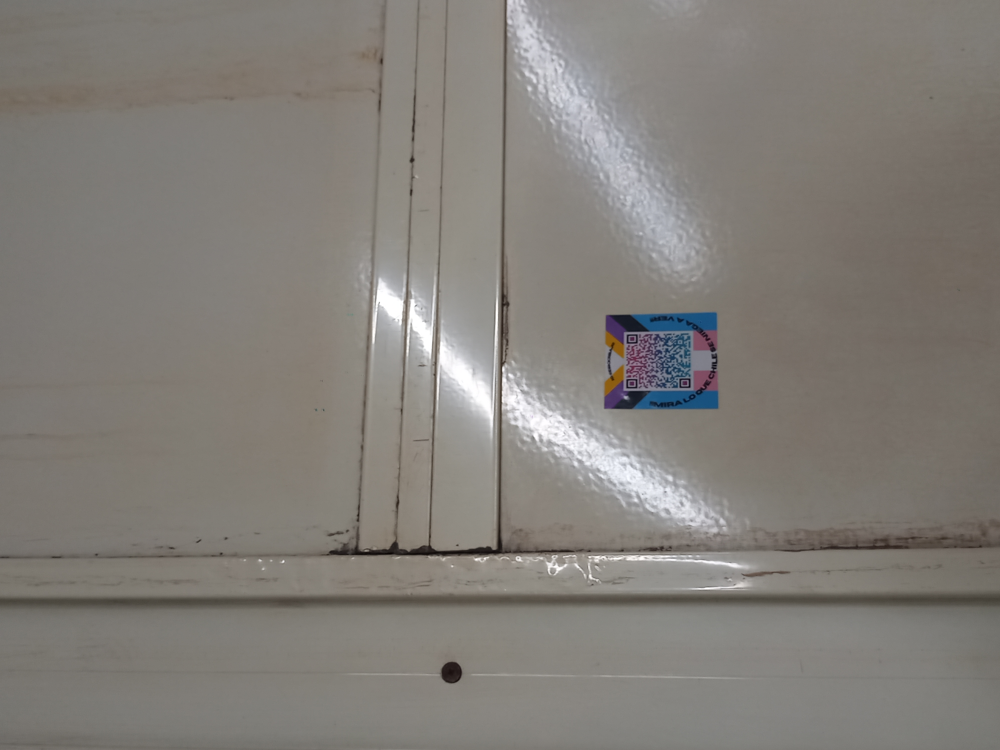
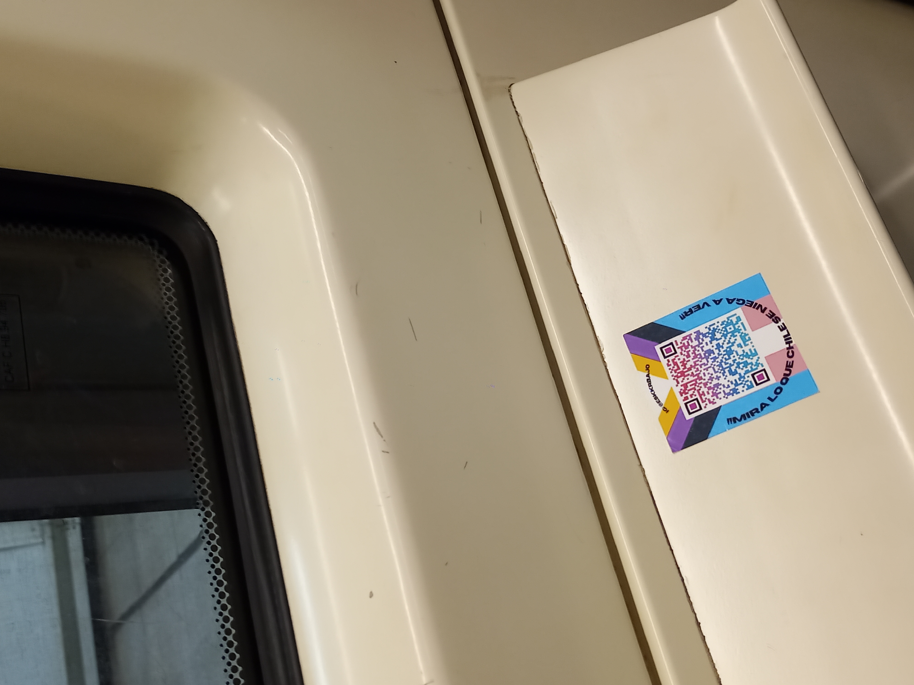
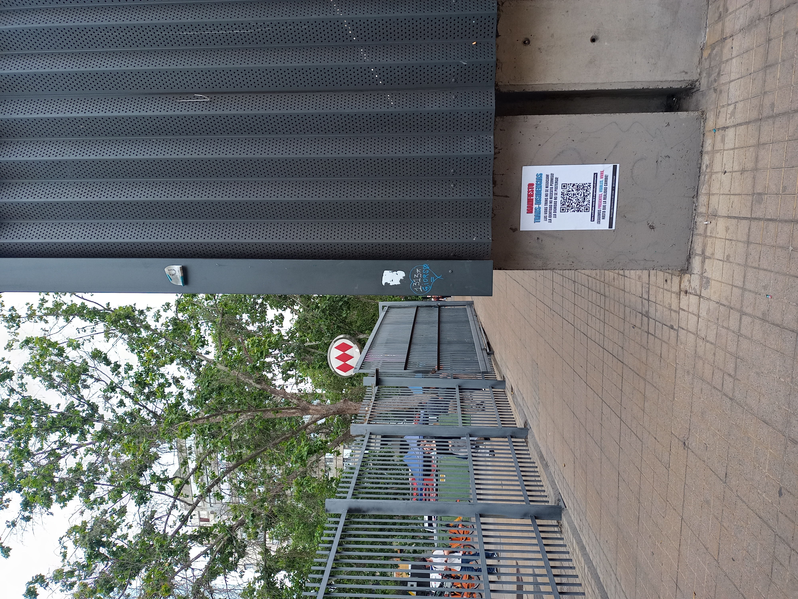
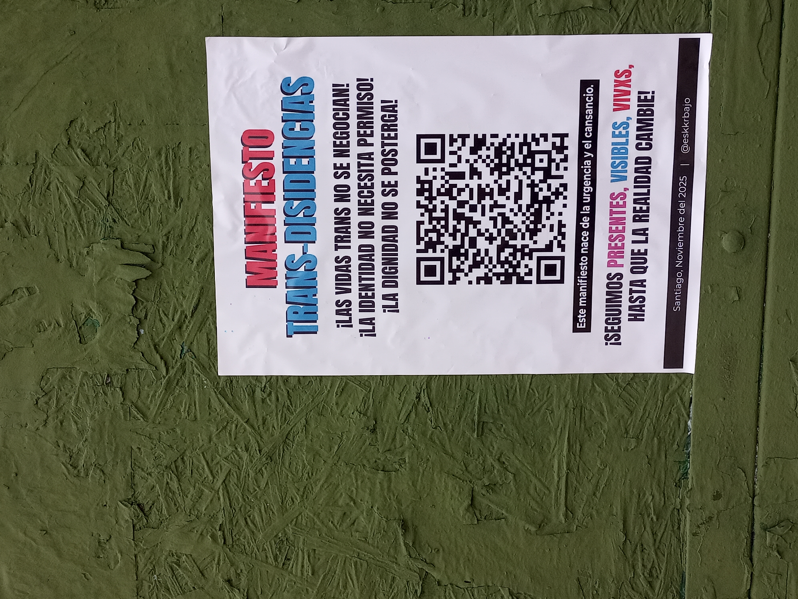
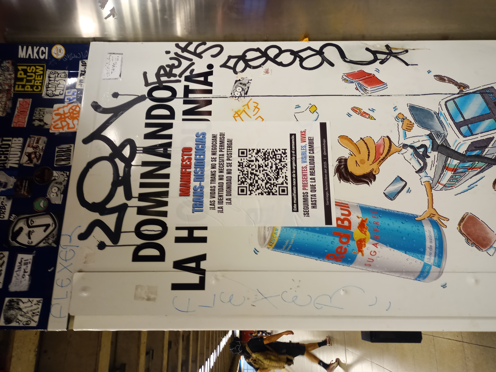
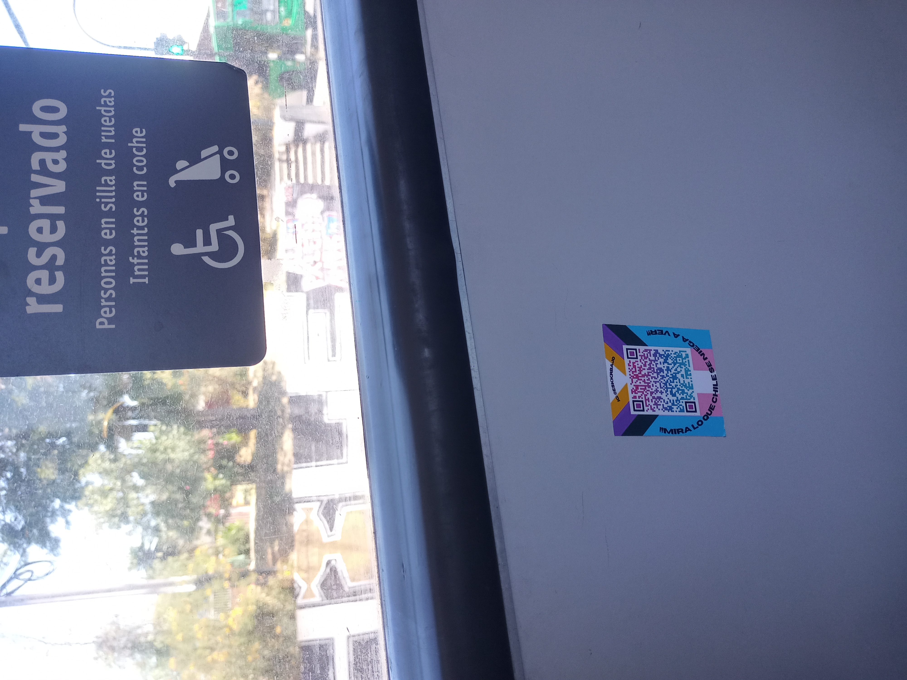
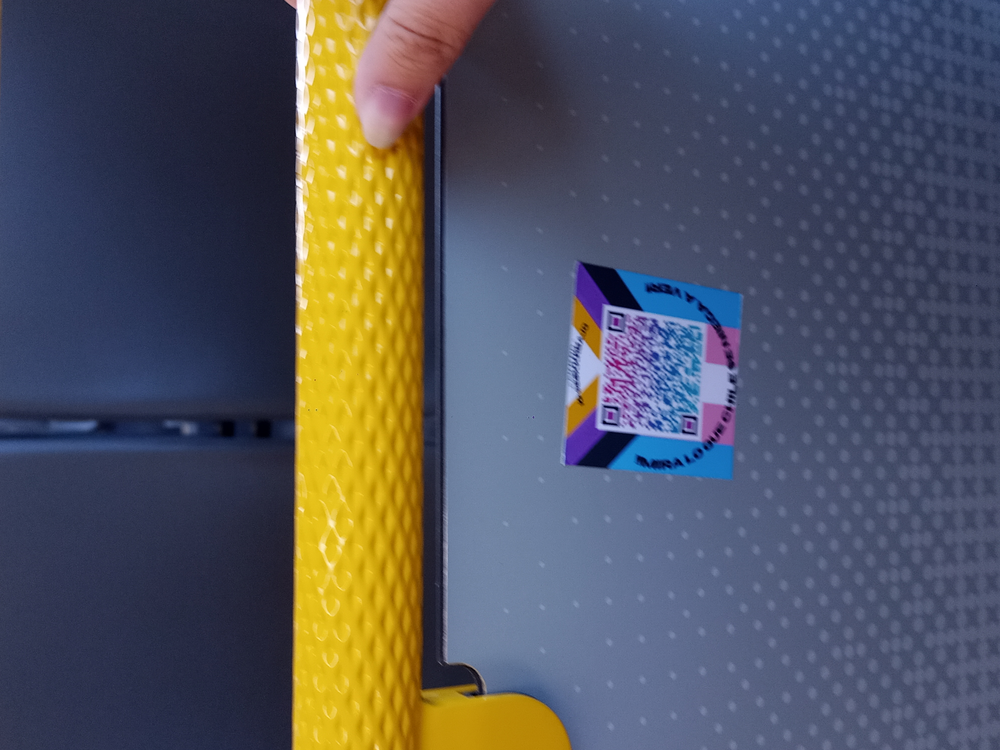
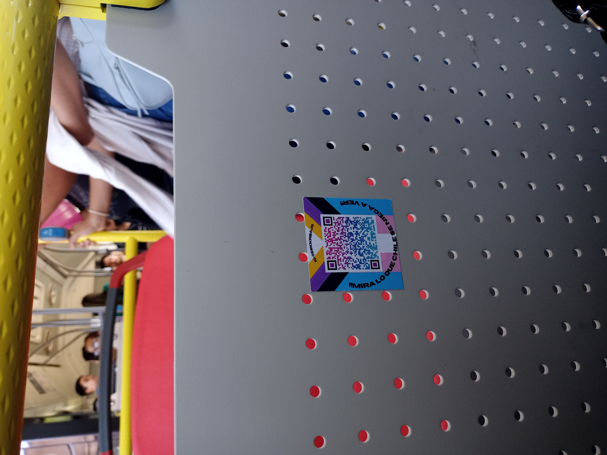
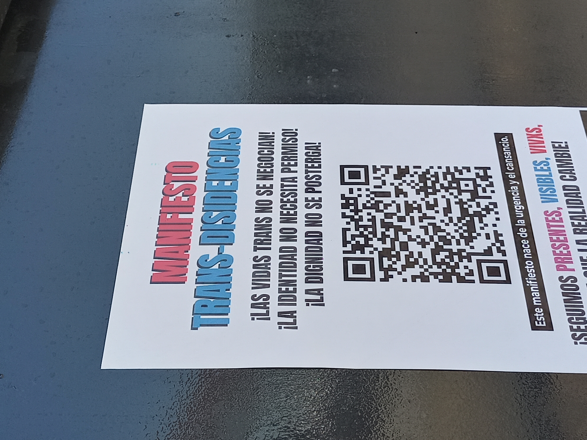
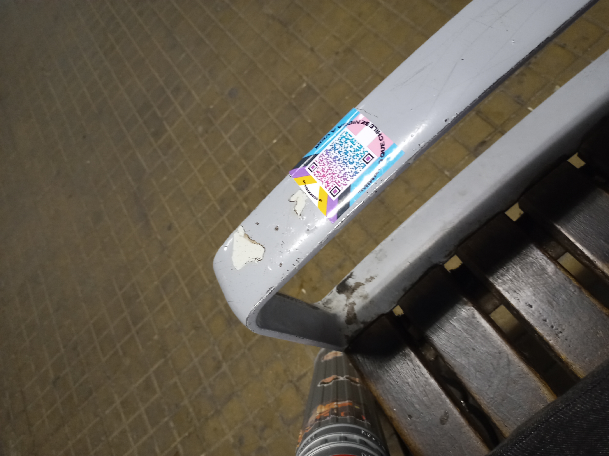
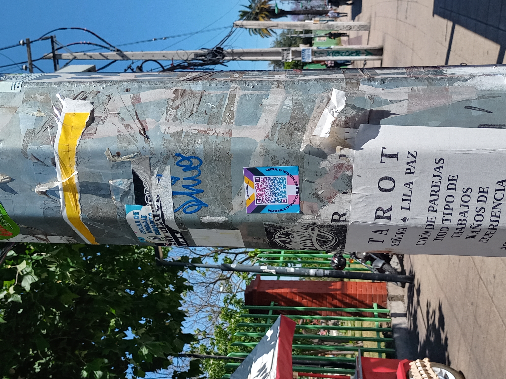
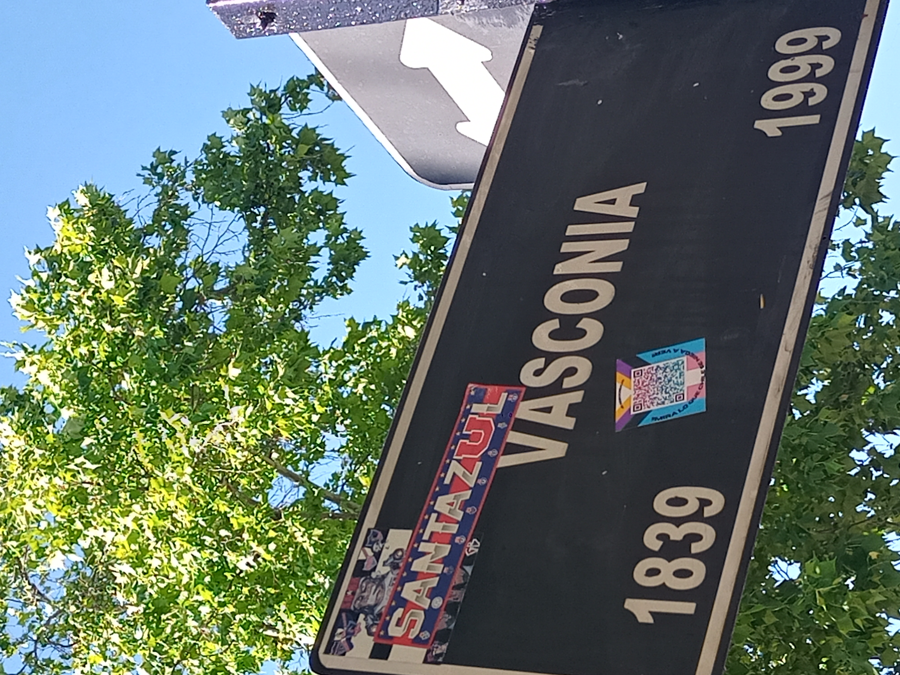
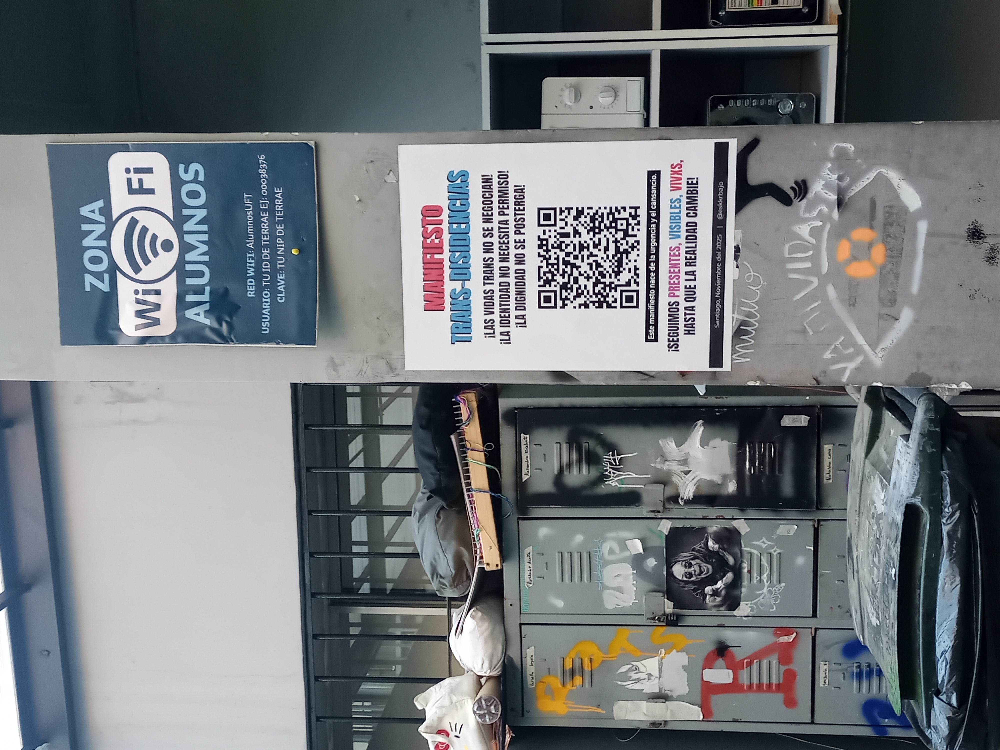
{kind=link}
{kind=link}
{kind=link}